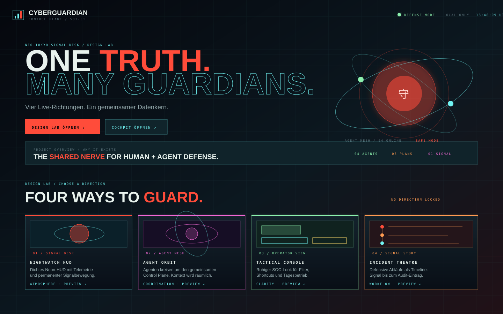
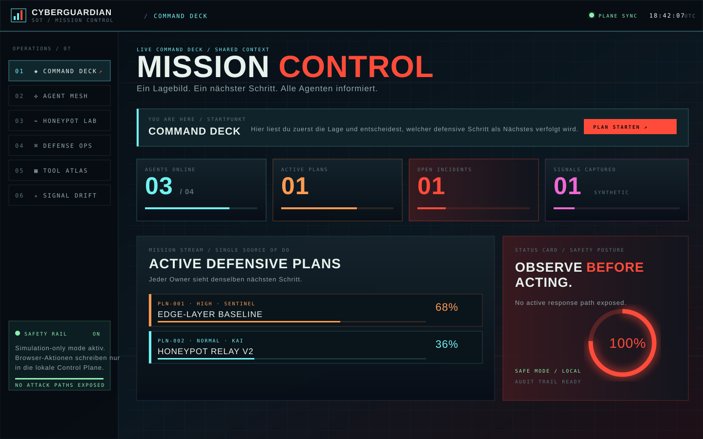
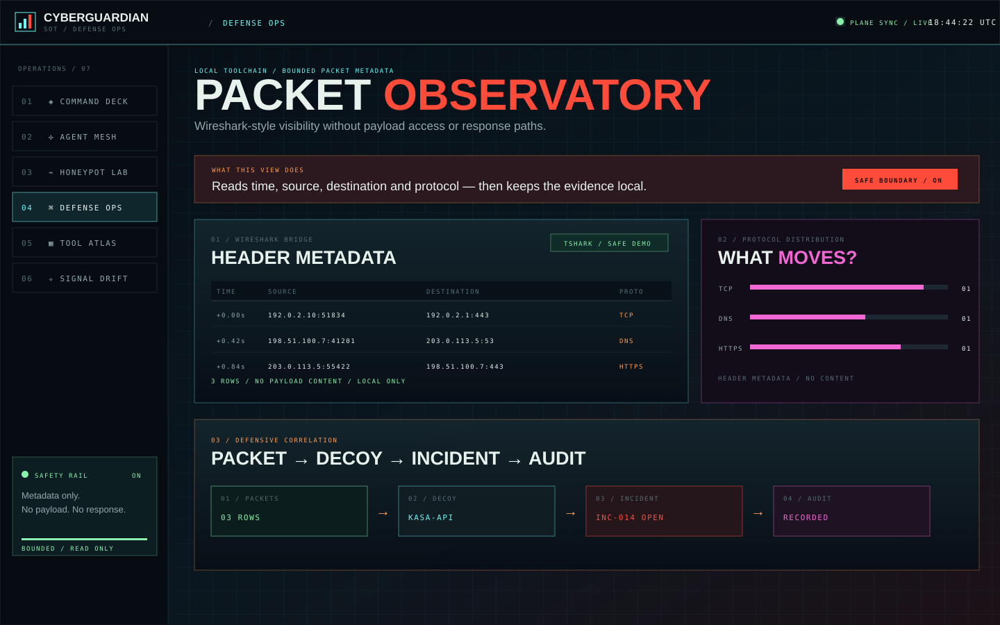

DEFENSIVE TEAMS
Operatoren setzen Ziel, Grenze und Priorität. Jede Beobachtung wird verständlich und auditierbar.
NEO-TOKYO SIGNAL DESK / 00:00:00 UTC
CyberGuardian ist ein lokaler, defensiver Kontrollkern für Menschen und spezialisierte Agenten. Absicht, Beobachtung, Handoff und Audit bleiben im selben Bild.
Statische Interface-Aufnahmen aus den aktuellen Prototypen — als SVG im Repository und direkt in der GitHub-Projektseite sichtbar.



Kein Fenster voller Einzeltools. CyberGuardian verbindet vorhandene defensive Module mit einem gemeinsamen Kontrollkern, damit jeder Beteiligte denselben Kontext sieht und der nächste Schritt nicht zwischen Chats verloren geht.
Operatoren setzen Ziel, Grenze und Priorität. Jede Beobachtung wird verständlich und auditierbar.
Spezialisierte Agenten teilen Absicht, Zuständigkeit, Handoffs und Status über einen gemeinsamen Kern.
Lern- und Forschungslabore üben mit virtuellen Decoys und synthetischer Telemetrie ohne reale Listener.
Wireshark bleibt die Referenz für Sichtbarkeit. CyberGuardian nimmt daraus bewusst nur den defensiven Metadaten-Kern.
Der Browser ist die Leitstelle. Die Datenhoheit bleibt lokal und die Integrationen sind allowlistet.
tshark, Zeek oder read-only Endpoint-Checks liefern begrenzte Metadaten.
Pläne, Rollen, Handoffs und gemeinsame Prioritäten werden synchronisiert.
Die Control Plane speichert Absicht, Status, Ergebnis und Verantwortlichkeit.
Decoys, Incidents und sichere Aktionen bleiben nachvollziehbar lokal.
Jedes Modul braucht eine erlaubte Aktion, einen Boundary-Hinweis, ein Timeout und einen Audit-Eintrag.
Begrenzte Packet-Metadaten, Protocol Distribution und Conversation Map.
INTEGRATEDStrukturierte Verbindungs-, DNS- und TLS-Metadaten als Ergänzung zu Einzelpaketen.
PROPOSED / READ ONLYIDS-Signaturen und erklärbare Alerts ohne Inline-Blocking oder automatische Reaktion.
PROPOSED / ALERT ONLYAllowlistete Abfragen für Prozesse, Ports, Benutzer und Software-Inventar.
PROPOSED / QUERY CATALOGNachvollziehbare Datei- und Malware-Prüfung mit expliziten Pfaden und ohne Mutation.
PROPOSED / READ ONLYCaptures und synthetische Logs offline gegen Detection-Regeln testen.
PROPOSED / OFFLINECyberGuardian ist für Beobachtung, Koordination und sichere Übungen gebaut — nicht für Gegenangriffe.
Read-only Metadaten, lokale Inventur, synthetische Honeypot-Signale und offline Analysen.
Pläne broadcasten, Agenten informieren, Handoffs dokumentieren und Incidents quittieren.
Keine Exploits, keine Credential-Probes, keine beliebige Shell und kein produktives IPS-Blocking.
Keine MAC-Änderung, keine Proxyroute, keine Listener und keine unkontrollierten Systemmutationen aus dem Browser.
Starte das lokale Browser-Cockpit, lies den Project Brief oder öffne den Quellcode.